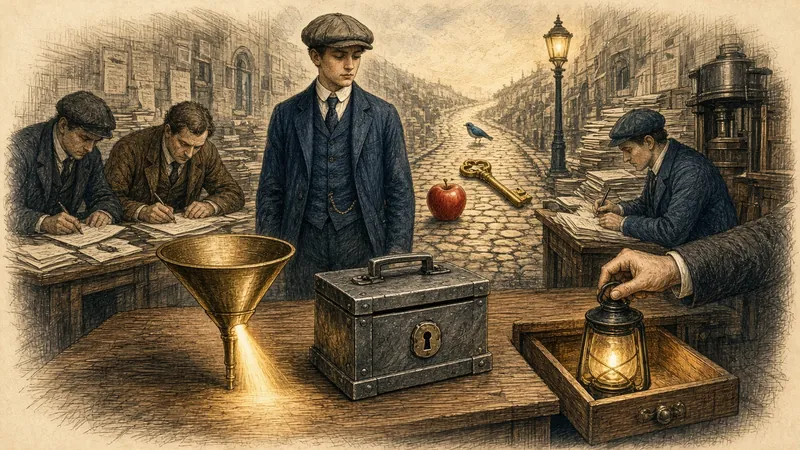

A man who could not forget anything shows us how memory really works, and why most of us forget so much.

The whole course · Pictures That Stick →
Moscow, in the 1920s. Every morning a newspaper editor gave his reporters their jobs for the day: a long list of addresses, names, and instructions about whom to see and what to ask. The reporters scribbled it all down. All except one.
The young man in the corner sat with his hands folded. He did not write a single word. The editor, annoyed, stopped in the middle of the list and told him to pay attention. The reporter stood up, and repeated the whole list back, in order, word for word, including the editor's own jokes.
The editor sent him to a psychologist, Alexander Luria, who studied him for about thirty years and later wrote a famous book about him. In the laboratory the reporter, known in the book only as S., was given long tables of numbers, lists of words, even strings of nonsense. He read them once or twice, and then repeated them forwards, backwards, and in any order Luria asked for. Years later he could still do it.
Luria could not find the limit. How did S. do it? He did not repeat the numbers over and over. He saw them. Numbers had colours and shapes. A voice could look like a cloud of yellow or smell like smoke. Everything he heard turned into a vivid picture, and he placed those pictures along a street he knew, so he could walk past them again.
A perfect memory sounds like a gift. For S. it was also a burden. His pictures never faded, so old ones piled up and got in the way of new ones. A line of poetry could call up a crowd of images and make it hard to follow the meaning. He even tried to forget numbers by writing them down, hoping that once the paper held them his mind could let go.
He found it hard to recognise faces, because a face changes every second and each change looked like a new picture. And abstract ideas gave him real trouble, because they could not easily be turned into a picture. So S. teaches us two things at once. First: memory is mostly a matter of how you take in what you want to keep. Second: you do not need a gift to do it. You can learn to turn things into pictures, on purpose, and put them in places you know. That is this whole course.
Say what you think each one means, then open it.
The case of S. is told in A. R. Luria, The Mind of a Mnemonist (1968). Retold here in our own words.
Memory is not one thing. It is a chain of three jobs, and a memory can fail at any link.
| Stage | What happens | How it fails | What helps |
|---|---|---|---|
| Encoding | You turn what you see or hear into something the brain can hold. | You were not really paying attention, or you only repeated words. | Attention, meaning, and a vivid picture. |
| Storage | The memory is kept over time. | It fades because you never came back to it. | Review at growing intervals. |
| Retrieval | You bring it back out. | It is in there but you cannot find the way to it. | A place or a link to start from: a cue. |
When you hold a number in your head for a moment while you dial it, you are using working memory. It is small. In 1956 the psychologist George Miller famously suggested about seven items, plus or minus two. More recent work puts it nearer four. Either way, it is a small desk, not a warehouse.
The limit is about chunks, not letters. FBICIANASA is ten letters, but FBI, CIA, NASA is three chunks you already know. A chunk is anything you can treat as one unit. You make chunks by grouping, and you make them stronger by giving them meaning.
In the 1880s Hermann Ebbinghaus tested himself on lists of nonsense syllables and found a pattern that has been confirmed many times since: forgetting is fastest at the start and then slows down. If you review the memory just as it begins to fade, it fades more slowly the next time.
Have a go before you open any answer. A rough attempt teaches you more than a perfect model you only read.
Say the answer first, then tap the card.
Eight terms from this lesson. They are not random: they fall into three groups (the process, the limit, the cure). Find the groups first, and they will be much easier.
Make three groups, give each a name and a picture. Do not just read the list.
The list has gone. Type what you remember, one item per line.
These reach back to earlier rooms. Answer in your head or out loud, then check.
Think about one thing you want to remember this month. Which of the three stages is most likely to go wrong for it, and what will you do about that?